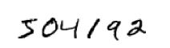
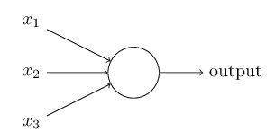
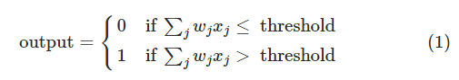
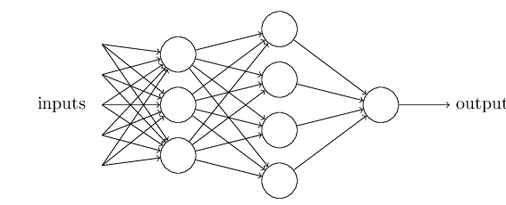

文章翻译自英文文章。学习神经网络的入门教程。
人类视觉系统是大自然的一大奇迹。 考虑下面的手写数字序列：

大部分人能够毫不费力的识别出这些数字是 504192。这种简单性只是一个幻觉。在我们大脑各半球，有一个主要的视觉皮层，即V1，它包含1.4亿个神经元以及数以百亿的神经元连接。而且人类不只是有V1，还有一系列的视觉皮层——V2,V3,V4和V5，它们能够执行更加复杂的图像处理。我们可以将大脑想象成一台超级计算机，在几亿年的进化中不断改进，最终非常适合理解这个视觉世界。要识别手写数字不是一件非常容易的事。然而，我们人类却能非常惊人的通过我们的眼睛理解所看到的一切，但是几乎所有的工作都是在不知不觉中完成的，以至于我们不会赞叹我们的视觉系统解决的问题有多么艰难。
神经网络用不同的方法来处理这个问题。它的思想就是利用大量的手写数字（训练样本），然后开发出一套从训练样本中进行学习的系统。换句话说，神经网络使用样本来自动推理出识别手写数字的规则。此外，通过增加训练样本规模，神经网络能学到手写体的更多规则从而提升它的识别精度。因此在我们像上面一样只有100张训练数字同时，有可能我们能通过成千上万更多的训练样本来构建更好的手写识别算法。
本章我们将编写一段计算机程序来实现一个能识别手写数字的神经网络。这个程序大概有74行，而且没有使用其他特别的神经网络库，但是这段程序能够具有96%的数字识别精度，而且没有人工干预。此外，在后面的章节中我们将改进算法达到99%以上的精度。实际上，最好的商业神经网络已经很好的应用在银行支票处理以及邮局识别地址等。
我们专注在手写体识别是因为它是一个很好的学习神经网络的原型问题。做为一个原型，它刚好合适：识别手写数字是一个挑战，不是那么容易，而它也不需要一个极其复杂的方案或者巨大的计算能力。此外，它也是开发更多高级技术的好方法，比如深度学习。因此整本书我们将不断重复回到手写识别这个问题。这本书的后面，我们将讨论这些算法思想如何应用到计算机视觉的其他问题，还包括语言识别、自然语言处理和其他领域。
当然，如果本章只是写一个识别手写数字的计算机程序，那么将非常短小！在编写过程中，我们将介绍很多神经网络的关键思想，包括人工神经网络的两大类别（感知器和sigmoid神经元）以及神经网络标准学习算法，即随机梯度下降。整个过程我们将关注在阐述为什么这样处理是有效的，从而让你构建起神经网络直觉。这比只陈述基础的机制更加冗长，但这对更深入理解所学到的内容是值得的。在这些收获上，本章结束你将明白深度学习是什么，且它为什么这么重要。
感知器(Perceptrons)
什么是神经网络？在开始之前，我将介绍一种人工的神经元，即感知器(perceptron)。感知器是由Frank Rosenblatt 在上世纪50到60年代发明的 , 灵感来源于 Warren McCulloch 和 Walter Pitts 的早期工作。今天人工神经网络使用更加通用的其他模型，本书以及许多现代的神经网络工作中，主要的神经网络模型是sigmoid神经元。 我们将很快讨论sigmoid神经元，但是为了更好了解它的原理，我们首先要理解感知器。
那么感知器如何工作呢？一个感知器获取几个二进制输入$x_1, x_2, \ldots$，并且产生一个二进制数出：

在这个例子中，感知器具有三个输入$x_1, x_2, x_3$。通常它会具有更多或更少的输入。Rosenblatt 提出了一个简单规则来计算最后数出。他引入了权重(weights) $w_1,w_2,\ldots$，这些实数表示各个输入对输出的重要性。这个神经元输出(output) $0$ 或者 $1$ 是由这些输入的加权求和 $\sum_j w_j x_j$ 是否大于或者小于某一个阈值(threshold)。不像这些权重，阈值是这个神经元的实数参数。将它们放入更加精确的代数术语中：

这就是一个感知器如何工作的全部内容！
这是一个基础的数学模型。你可以这么理解感知器，它是一个通过加权凭据来进行决策的设备。让我们来看这个例子，可能它不是一个真实的例子，但是非常好理解，后面我们将很快进入真实的例子。假设周末到了，你听说在你所在的城市将有一个奶酪节，你很喜欢吃奶酪，并且正决定是否要去参加这个节日，你可能会通过以下三个方面来权衡你的决定:
- 天气好吗？
- 你的男(女)朋友是否愿意陪你去？
- 是否这个活动距离公共交通很近？（你自己没车）
我们将这三个因素用对应的二进制变量$x_1, x_2$和$x_3$表示。比如，当天气还不错时，我们有$x_1 = 1$ ，天气不好时$x_1 = 0$；相似的，如果男或女朋友愿意去，$x_2 = 1$，否则$x_2 = 0$；对于公共交通$x_3$同理赋值。
现在假设奶酪是你的最爱，以致于即便你的男或女朋友不感兴趣而且去那里也不太方便，你仍然非常想去参加这个节日活动。但是也许你真的讨厌坏天气，而且如果天气很糟，你也没办法去。你能使用感知器来模拟这类决策。一种决策方式是，让天气权重 $w_1 = 6$，其他条件权重分别为$w_2 = 2$，$w_3 = 2$。权重$w_1$值越大表示天气影响最大，比起男或女朋友加入或者交通距离的影响都大。最后，假设你选择5做为感知器阈值，按照这种选择，这个感知器就能实现这个决策模型：当天气好时候输出$1$，天气不好时候输出$0$，无论你男或女朋友是否愿意去，或者交通是否比较近。
通过更改权重和阈值，我们能得到不同的决策模型。例如，我们将阈值设为$3$，那么感知器会在以下条件满足时决定去参加活动：如果天气很好、或者男(女)朋友愿意去并且交通很近。换句话说，它将是决策的不同模型，阈值越低，表明你越想去参加这个节日活动。
显然，这个感知器不是人类决策的完整模型！但是这个例子说明了一个感知器如何能将各种凭据进行加权和来制定决策，而且一个复杂的感知器网络能做出非常微妙的决策：

在这个网络中，第一列感知器（我们称其为第一层感知器）通过加权输入凭据来做出三个非常简单的决策。那第二列感知器是什么呢？其中每一个感知器都是通过将第一列的决策结果进行加权和来做出自己的决策。通过这种方式，第二层感知器能够比第一层感知器做出更加复杂和抽象层的决策。第三层感知器能做出更加复杂的决策，以此类推，更多层感知器能够进行更加复杂的决策。在这个网络中，第一列感知器（我们称其为第一层感知器）通过加权输入凭据来做出三个非常简单的决策。那第二列感知器是什么呢？其中每一个感知器都是通过将第一列的决策结果进行加权和来做出自己的决策。通过这种方式，第二层感知器能够比第一层感知器做出更加复杂和抽象层的决策。第三层感知器能做出更加复杂的决策，以此类推，更多层感知器能够进行更加复杂的决策。
顺便说一句，当我们定义感知器时，它们都只有一个输出。但上面的网络中，这些感知器看上去有多个输出。实际上，它们也仍然只有一个输出，只不过为了更好的表明这些感知器输出被其他感知器所使用，因此采用了多个输出的箭头线表示，这比起绘制一条输出线然后分裂开更好一些。